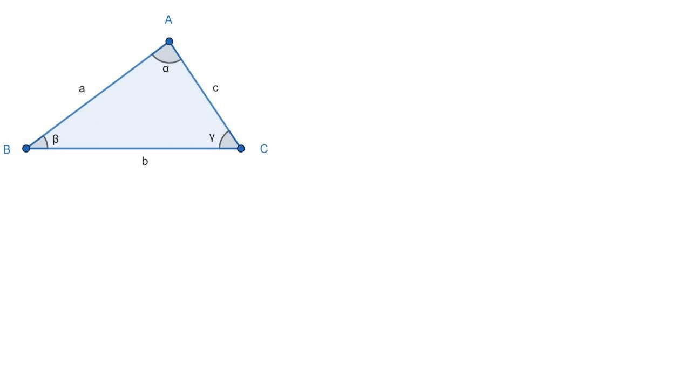

Triángulo Escaleno
Cada uno de sus tres lados tiene una
medida distinta.
Un triángulo escaleno puede ser acutángulo,
rectángulo o obtusángulo.

Usando esta imagen como referencia, podemos reconocer y enumerar los elementos o las características del triángulo escaleno:
Tres vértices, identificados en la imagen con las letras A, B y C.
Tres lados de diferente longitud. El segmento AB (el que va del vértice A al vértice B) tiene una longitud de a (minúscula); BC tiene una longitud de b. Finalmente, AC tiene una longitud de c. En la imagen a = 5 cm; b = 6 cm y c = 3,6 cm.<
Tres ángulos de diferente amplitud, identificados en la imagen con las letras griegas α (alfa), β (beta) y γ (gamma), los cuales suman 180 grados en total. La amplitud de cada ángulo es: α = 87º; β = 37º; γ = 56º.
El triángulo escaleno es uno de los tres tipos de triángulos que existen según el tamaño de sus lados y ángulos, junto a los triángulos equilátero e isósceles.
La diferencia reside en lo siguiente: el triángulo equilátero tiene todos sus lados y ángulos iguales. El triángulo isósceles solo tiene dos lados y dos ángulos iguales. En cambio, todos los lados y ángulos del escaleno son desiguales.
Tipos de triángulo escaleno según sus ángulos
En general, los triángulos pueden clasificarse en rectángulos, acutángulos y obtusángulos. Esto depende de los tipos de ángulos que posean, los cuales pueden ser ángulos rectos (igual a 90º), agudos (menor que 90º) u obtusos (mayor que 90º). El triángulo escaleno se presenta en los tres tipos mencionados.